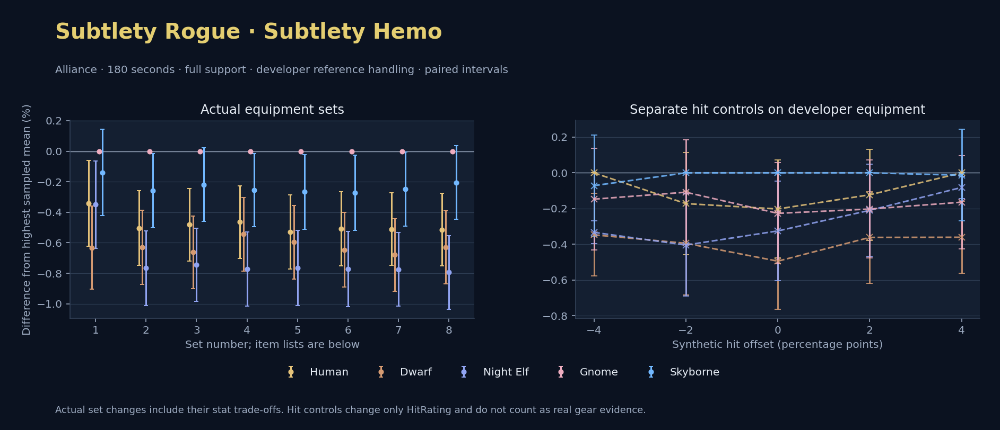

Alliance · Human / Dwarf / Night Elf / Gnome / Skyborne

No pet or guardian appears in the reference combat metrics. Reference: Human, developer equipment, 180 seconds and full support. Pet choices remain those of the developer build.
WoWSims developer · Slow Main Hand
Unimplemented enchant or active set effects: [{"id": 1676, "pieces": 3, "effects": ["Restores 15 health per 5 sec."]}, {"id": 1676, "pieces": 5, "effects": ["When struck in combat, has a 5% chance to remove a Snare effect from yourself. Can only occur once every 60 sec."]}]
Unmeasured proc rates: [{"source": "set", "id": 1676, "pieces": 4, "kind": "ppm", "origin": "unknown"}, {"source": "enchant", "id": 1900, "name": "Enchant Weapon - Crusader", "kind": "ppm", "origin": "vanilla"}, {"source": "item", "id": 871, "name": "Flurry Axe", "kind": "ppm", "origin": "vanilla"}]
180 seconds, full support and original developer references. Hit below is generic sheet melee / spell hit; school and talent bonuses can be attached directly to spells.
| Race | DPS | Gap and interval | Generic hit | Replay |
|---|---|---|---|---|
| Gnome | 669.02 | +0.000% ± 0.000 | 11.4% / 11.4% | Native input · Website JSON |
| Skyborne | 668.09 | -0.139% ± 0.282 | 11.4% / 11.4% | Native input · Website JSON |
| Human | 666.74 | -0.341% ± 0.281 | 11.4% / 11.4% | Native input · Website JSON |
| Night Elf | 666.68 | -0.350% ± 0.287 | 11.4% / 11.4% | Native input · Website JSON |
| Dwarf | 664.79 | -0.633% ± 0.272 | 12.4% / 12.4% | Native input · Website JSON |
| Slot | Item | ID | Enchant |
|---|---|---|---|
| Head | Darkmantle Cap | 226829 | Lesser Arcane Amalgamation |
| Neck | Beads of Ogre Might | 22150 | |
| Shoulder | Theramore Pauldrons | 271955 | |
| Back | Earthweave Cloak | 21187 | Enchant Cloak - Agility |
| Chest | Darkmantle Tunic | 226825 | Enchant Chest - Living Stats |
| Wrist | Darkmantle Bracers | 226830 | Enchant Bracer - Agility |
| Hands | Darkmantle Grips | 226828 | Enchant Gloves - Greater Agility |
| Waist | Assassin's Waistguard | 272395 | |
| Legs | Darkmantle Pants | 226827 | Lesser Arcane Amalgamation |
| Feet | Darkmantle Footpads | 226831 | Enchant Boots - Minor Speed |
| Ring 1 | Don Julio's Band | 19325 | |
| Ring 2 | Might of Cenarius | 21189 | |
| Trinket 1 | Adaptive Combat Assistant | 272437 | |
| Trinket 2 | Rune of the Guard Captain | 19120 | |
| Main hand | Persuader | 22384 | Enchant Weapon - Crusader |
| Off hand | Flurry Axe | 871 | Enchant Weapon - Agility |
| Ranged / relic | Fahrad's Reloading Repeater | 22347 |
Published ranked alternatives · Published pre-raid
Recorded source replacements: [{"slot": "head", "from": 11735, "to": 252482, "publishedAlternativeRank": 1, "publishedEpDelta": -2.7, "reason": "First published alternative compatible with the current WoWSims database, class, faction and occupied slots."}, {"slot": "back", "from": 13340, "to": 272414, "publishedAlternativeRank": 1, "publishedEpDelta": -7.6, "reason": "First published alternative compatible with the current WoWSims database, class, faction and occupied slots."}, {"slot": "finger2", "from": 17713, "to": 285190, "publishedAlternativeRank": 2, "publishedEpDelta": -16.6, "reason": "First published alternative compatible with the current WoWSims database, class, faction and occupied slots."}, {"slot": "trinket2", "from": 13171, "to": 274759, "publishedAlternativeRank": 1, "publishedEpDelta": -1.3, "reason": "First published alternative compatible with the current WoWSims database, class, faction and occupied slots."}, {"slot": "ranged", "from": 2100, "to": 13023, "publishedAlternativeRank": 1, "publishedEpDelta": -3.5, "reason": "First published alternative compatible with the current WoWSims database, class, faction and occupied slots."}]
Unimplemented enchant or active set effects: [{"id": 143, "pieces": 2, "effects": ["Improves your chance to hit by 2.0%."]}]
Unmeasured proc rates: [{"source": "enchant", "id": 1900, "name": "Enchant Weapon - Crusader", "kind": "ppm", "origin": "vanilla"}, {"source": "enchant", "id": 1900, "name": "Enchant Weapon - Crusader", "kind": "ppm", "origin": "vanilla"}]
180 seconds, full support and original developer references. Hit below is generic sheet melee / spell hit; school and talent bonuses can be attached directly to spells.
| Race | DPS | Gap and interval | Generic hit | Replay |
|---|---|---|---|---|
| Gnome | 595.44 | +0.000% ± 0.000 | 5.5% / 5.5% | Native input · Website JSON |
| Skyborne | 593.91 | -0.257% ± 0.243 | 5.5% / 5.5% | Native input · Website JSON |
| Human | 592.44 | -0.503% ± 0.244 | 5.5% / 5.5% | Native input · Website JSON |
| Dwarf | 591.69 | -0.629% ± 0.242 | 6.5% / 6.5% | Native input · Website JSON |
| Night Elf | 590.88 | -0.766% ± 0.246 | 5.5% / 5.5% | Native input · Website JSON |
| Slot | Item | ID | Enchant |
|---|---|---|---|
| Head | Blue Suede Hat | 252482 | Lesser Arcane Amalgamation |
| Neck | Skibi's Pendant | 13089 | Enchant Necklace - Agility |
| Shoulder | Shadowcraft Spaulders | 16708 | |
| Back | Howler's Furs | 272414 | Enchant Cloak - Agility |
| Chest | Dawn Armor | 252483 | Enchant Chest - Greater Stats |
| Wrist | Shadowcraft Bracers | 16710 | Enchant Bracer - Agility |
| Hands | Devilsaur Gauntlets | 15063 | Enchant Gloves - Greater Agility |
| Waist | Assassin's Waistguard | 272395 | |
| Legs | Devilsaur Leggings | 15062 | Lesser Arcane Amalgamation |
| Feet | Shadowcraft Boots | 16711 | Enchant Boots - Greater Agility |
| Ring 1 | Cutthroat's Signet | 272408 | |
| Ring 2 | Wyvern Heart Band | 285190 | |
| Trinket 1 | Adaptive Combat Assistant | 272437 | |
| Trinket 2 | Everlook Pathcarver | 274759 | |
| Main hand | Heartseeker | 12783 | Enchant Weapon - Crusader |
| Off hand | Scarlet Kris | 5267 | Enchant Weapon - Crusader |
| Ranged / relic | Eaglehorn Long Bow | 13023 |
Published one-slot hit alternative · Published pre-raid
One source-listed alternative; at least 80% of the source slot score retained. Reported hit selects the contrast; only native stats determine simulation outcomes. This is an experimental combination, not an endorsed best set.
Recorded source replacements: [{"slot": "head", "from": 11735, "to": 252482, "publishedAlternativeRank": 1, "publishedEpDelta": -2.7, "reason": "First published alternative compatible with the current WoWSims database, class, faction and occupied slots."}, {"slot": "back", "from": 13340, "to": 272414, "publishedAlternativeRank": 1, "publishedEpDelta": -7.6, "reason": "First published alternative compatible with the current WoWSims database, class, faction and occupied slots."}, {"slot": "finger2", "from": 17713, "to": 285190, "publishedAlternativeRank": 2, "publishedEpDelta": -16.6, "reason": "First published alternative compatible with the current WoWSims database, class, faction and occupied slots."}, {"slot": "trinket2", "from": 13171, "to": 274759, "publishedAlternativeRank": 1, "publishedEpDelta": -1.3, "reason": "First published alternative compatible with the current WoWSims database, class, faction and occupied slots."}, {"slot": "ranged", "from": 2100, "to": 13023, "publishedAlternativeRank": 1, "publishedEpDelta": -3.5, "reason": "First published alternative compatible with the current WoWSims database, class, faction and occupied slots."}]
Unimplemented enchant or active set effects: [{"id": 143, "pieces": 2, "effects": ["Improves your chance to hit by 2.0%."]}]
Unmeasured proc rates: [{"source": "enchant", "id": 1900, "name": "Enchant Weapon - Crusader", "kind": "ppm", "origin": "vanilla"}, {"source": "enchant", "id": 1900, "name": "Enchant Weapon - Crusader", "kind": "ppm", "origin": "vanilla"}]
180 seconds, full support and original developer references. Hit below is generic sheet melee / spell hit; school and talent bonuses can be attached directly to spells.
| Race | DPS | Gap and interval | Generic hit | Replay |
|---|---|---|---|---|
| Gnome | 589.22 | +0.000% ± 0.000 | 4.5% / 4.5% | Native input · Website JSON |
| Skyborne | 587.93 | -0.220% ± 0.241 | 4.5% / 4.5% | Native input · Website JSON |
| Human | 586.39 | -0.482% ± 0.237 | 4.5% / 4.5% | Native input · Website JSON |
| Dwarf | 585.32 | -0.662% ± 0.239 | 5.5% / 5.5% | Native input · Website JSON |
| Night Elf | 584.83 | -0.745% ± 0.240 | 4.5% / 4.5% | Native input · Website JSON |
| Slot | Item | ID | Enchant |
|---|---|---|---|
| Head | Blue Suede Hat | 252482 | Lesser Arcane Amalgamation |
| Neck | Skibi's Pendant | 13089 | Enchant Necklace - Agility |
| Shoulder | Shadowcraft Spaulders | 16708 | |
| Back | Howler's Furs | 272414 | Enchant Cloak - Agility |
| Chest | Timbermaw Tunic | 252484 | Enchant Chest - Greater Stats |
| Wrist | Shadowcraft Bracers | 16710 | Enchant Bracer - Agility |
| Hands | Devilsaur Gauntlets | 15063 | Enchant Gloves - Greater Agility |
| Waist | Assassin's Waistguard | 272395 | |
| Legs | Devilsaur Leggings | 15062 | Lesser Arcane Amalgamation |
| Feet | Shadowcraft Boots | 16711 | Enchant Boots - Greater Agility |
| Ring 1 | Cutthroat's Signet | 272408 | |
| Ring 2 | Wyvern Heart Band | 285190 | |
| Trinket 1 | Adaptive Combat Assistant | 272437 | |
| Trinket 2 | Everlook Pathcarver | 274759 | |
| Main hand | Heartseeker | 12783 | Enchant Weapon - Crusader |
| Off hand | Scarlet Kris | 5267 | Enchant Weapon - Crusader |
| Ranged / relic | Eaglehorn Long Bow | 13023 |
Published ranked alternatives · Published pre-raid
Recorded source replacements: [{"slot": "back", "from": 13340, "to": 272414, "publishedAlternativeRank": 1, "publishedEpDelta": -4.4, "reason": "First published alternative compatible with the current WoWSims database, class, faction and occupied slots."}, {"slot": "finger2", "from": 17713, "to": 285190, "publishedAlternativeRank": 2, "publishedEpDelta": -16.6, "reason": "First published alternative compatible with the current WoWSims database, class, faction and occupied slots."}, {"slot": "trinket2", "from": 13171, "to": 274759, "publishedAlternativeRank": 1, "publishedEpDelta": -1.3, "reason": "First published alternative compatible with the current WoWSims database, class, faction and occupied slots."}, {"slot": "ranged", "from": 2100, "to": 13023, "publishedAlternativeRank": 2, "publishedEpDelta": -3.5, "reason": "First published alternative compatible with the current WoWSims database, class, faction and occupied slots."}]
Unimplemented enchant or active set effects: [{"id": 142, "pieces": 2, "effects": ["10% chance of dealing 20 Nature damage on a successful melee attack."]}, {"id": 142, "pieces": 3, "effects": ["4% chance on melee attack of restoring 30 energy."]}]
Unmeasured proc rates: [{"source": "enchant", "id": 1900, "name": "Enchant Weapon - Crusader", "kind": "ppm", "origin": "vanilla"}, {"source": "enchant", "id": 1900, "name": "Enchant Weapon - Crusader", "kind": "ppm", "origin": "vanilla"}]
180 seconds, full support and original developer references. Hit below is generic sheet melee / spell hit; school and talent bonuses can be attached directly to spells.
| Race | DPS | Gap and interval | Generic hit | Replay |
|---|---|---|---|---|
| Gnome | 583.05 | +0.000% ± 0.000 | 6.3% / 6.3% | Native input · Website JSON |
| Skyborne | 581.56 | -0.256% ± 0.239 | 6.3% / 6.3% | Native input · Website JSON |
| Human | 580.34 | -0.464% ± 0.238 | 6.3% / 6.3% | Native input · Website JSON |
| Dwarf | 579.87 | -0.544% ± 0.243 | 7.3% / 7.3% | Native input · Website JSON |
| Night Elf | 578.55 | -0.771% ± 0.242 | 6.3% / 6.3% | Native input · Website JSON |
| Slot | Item | ID | Enchant |
|---|---|---|---|
| Head | Shadowcraft Cap | 16707 | Lesser Arcane Amalgamation |
| Neck | Skibi's Pendant | 13089 | Enchant Necklace - Agility |
| Shoulder | Stormshroud Shoulders | 15058 | |
| Back | Howler's Furs | 272414 | Enchant Cloak - Agility |
| Chest | Dawn Armor | 252483 | Enchant Chest - Greater Stats |
| Wrist | Shadowcraft Bracers | 16710 | Enchant Bracer - Agility |
| Hands | Stormshroud Gloves | 21278 | Enchant Gloves - Greater Agility |
| Waist | Assassin's Waistguard | 272395 | |
| Legs | Stormshroud Pants | 15057 | Lesser Arcane Amalgamation |
| Feet | Shadowcraft Boots | 16711 | Enchant Boots - Greater Agility |
| Ring 1 | Cutthroat's Signet | 272408 | |
| Ring 2 | Wyvern Heart Band | 285190 | |
| Trinket 1 | Adaptive Combat Assistant | 272437 | |
| Trinket 2 | Everlook Pathcarver | 274759 | |
| Main hand | Heartseeker | 12783 | Enchant Weapon - Crusader |
| Off hand | Scarlet Kris | 5267 | Enchant Weapon - Crusader |
| Ranged / relic | Eaglehorn Long Bow | 13023 |
Published one-slot hit alternative · Published pre-raid
One source-listed alternative; at least 80% of the source slot score retained. Reported hit selects the contrast; only native stats determine simulation outcomes. This is an experimental combination, not an endorsed best set.
Recorded source replacements: [{"slot": "back", "from": 13340, "to": 272414, "publishedAlternativeRank": 1, "publishedEpDelta": -4.4, "reason": "First published alternative compatible with the current WoWSims database, class, faction and occupied slots."}, {"slot": "finger2", "from": 17713, "to": 285190, "publishedAlternativeRank": 2, "publishedEpDelta": -16.6, "reason": "First published alternative compatible with the current WoWSims database, class, faction and occupied slots."}, {"slot": "trinket2", "from": 13171, "to": 274759, "publishedAlternativeRank": 1, "publishedEpDelta": -1.3, "reason": "First published alternative compatible with the current WoWSims database, class, faction and occupied slots."}, {"slot": "ranged", "from": 2100, "to": 13023, "publishedAlternativeRank": 2, "publishedEpDelta": -3.5, "reason": "First published alternative compatible with the current WoWSims database, class, faction and occupied slots."}]
Unimplemented enchant or active set effects: [{"id": 142, "pieces": 2, "effects": ["10% chance of dealing 20 Nature damage on a successful melee attack."]}, {"id": 142, "pieces": 3, "effects": ["4% chance on melee attack of restoring 30 energy."]}]
Unmeasured proc rates: [{"source": "enchant", "id": 1900, "name": "Enchant Weapon - Crusader", "kind": "ppm", "origin": "vanilla"}, {"source": "enchant", "id": 1900, "name": "Enchant Weapon - Crusader", "kind": "ppm", "origin": "vanilla"}]
180 seconds, full support and original developer references. Hit below is generic sheet melee / spell hit; school and talent bonuses can be attached directly to spells.
| Race | DPS | Gap and interval | Generic hit | Replay |
|---|---|---|---|---|
| Gnome | 577.54 | +0.000% ± 0.000 | 5.3% / 5.3% | Native input · Website JSON |
| Skyborne | 576.00 | -0.266% ± 0.244 | 5.3% / 5.3% | Native input · Website JSON |
| Human | 574.49 | -0.528% ± 0.243 | 5.3% / 5.3% | Native input · Website JSON |
| Dwarf | 574.09 | -0.596% ± 0.242 | 6.3% / 6.3% | Native input · Website JSON |
| Night Elf | 573.11 | -0.766% ± 0.246 | 5.3% / 5.3% | Native input · Website JSON |
| Slot | Item | ID | Enchant |
|---|---|---|---|
| Head | Shadowcraft Cap | 16707 | Lesser Arcane Amalgamation |
| Neck | Skibi's Pendant | 13089 | Enchant Necklace - Agility |
| Shoulder | Stormshroud Shoulders | 15058 | |
| Back | Howler's Furs | 272414 | Enchant Cloak - Agility |
| Chest | Timbermaw Tunic | 252484 | Enchant Chest - Greater Stats |
| Wrist | Shadowcraft Bracers | 16710 | Enchant Bracer - Agility |
| Hands | Stormshroud Gloves | 21278 | Enchant Gloves - Greater Agility |
| Waist | Assassin's Waistguard | 272395 | |
| Legs | Stormshroud Pants | 15057 | Lesser Arcane Amalgamation |
| Feet | Shadowcraft Boots | 16711 | Enchant Boots - Greater Agility |
| Ring 1 | Cutthroat's Signet | 272408 | |
| Ring 2 | Wyvern Heart Band | 285190 | |
| Trinket 1 | Adaptive Combat Assistant | 272437 | |
| Trinket 2 | Everlook Pathcarver | 274759 | |
| Main hand | Heartseeker | 12783 | Enchant Weapon - Crusader |
| Off hand | Scarlet Kris | 5267 | Enchant Weapon - Crusader |
| Ranged / relic | Eaglehorn Long Bow | 13023 |
Published ranked alternatives · Published pre-raid
Recorded source replacements: [{"slot": "head", "from": 11735, "to": 252482, "publishedAlternativeRank": 1, "publishedEpDelta": -2.7, "reason": "First published alternative compatible with the current WoWSims database, class, faction and occupied slots."}, {"slot": "back", "from": 13340, "to": 272414, "publishedAlternativeRank": 1, "publishedEpDelta": -7.6, "reason": "First published alternative compatible with the current WoWSims database, class, faction and occupied slots."}, {"slot": "finger2", "from": 17713, "to": 285190, "publishedAlternativeRank": 2, "publishedEpDelta": -16.6, "reason": "First published alternative compatible with the current WoWSims database, class, faction and occupied slots."}, {"slot": "ranged", "from": 2100, "to": 13023, "publishedAlternativeRank": 1, "publishedEpDelta": -3.5, "reason": "First published alternative compatible with the current WoWSims database, class, faction and occupied slots."}]
Unimplemented enchant or active set effects: [{"id": 143, "pieces": 2, "effects": ["Improves your chance to hit by 2.0%."]}]
Unmeasured proc rates: [{"source": "enchant", "id": 1900, "name": "Enchant Weapon - Crusader", "kind": "ppm", "origin": "vanilla"}, {"source": "enchant", "id": 1900, "name": "Enchant Weapon - Crusader", "kind": "ppm", "origin": "vanilla"}]
180 seconds, full support and original developer references. Hit below is generic sheet melee / spell hit; school and talent bonuses can be attached directly to spells.
| Race | DPS | Gap and interval | Generic hit | Replay |
|---|---|---|---|---|
| Gnome | 597.73 | +0.000% ± 0.000 | 5.5% / 5.5% | Native input · Website JSON |
| Skyborne | 596.11 | -0.272% ± 0.245 | 5.5% / 5.5% | Native input · Website JSON |
| Human | 594.70 | -0.508% ± 0.244 | 5.5% / 5.5% | Native input · Website JSON |
| Dwarf | 593.87 | -0.646% ± 0.244 | 6.5% / 6.5% | Native input · Website JSON |
| Night Elf | 593.13 | -0.771% ± 0.246 | 5.5% / 5.5% | Native input · Website JSON |
| Slot | Item | ID | Enchant |
|---|---|---|---|
| Head | Blue Suede Hat | 252482 | Lesser Arcane Amalgamation |
| Neck | Skibi's Pendant | 13089 | Enchant Necklace - Agility |
| Shoulder | Shadowcraft Spaulders | 16708 | |
| Back | Howler's Furs | 272414 | Enchant Cloak - Agility |
| Chest | Dawn Armor | 252483 | Enchant Chest - Greater Stats |
| Wrist | Shadowcraft Bracers | 16710 | Enchant Bracer - Agility |
| Hands | Devilsaur Gauntlets | 15063 | Enchant Gloves - Greater Agility |
| Waist | Assassin's Waistguard | 272395 | |
| Legs | Devilsaur Leggings | 15062 | Lesser Arcane Amalgamation |
| Feet | Shadowcraft Boots | 16711 | Enchant Boots - Greater Agility |
| Ring 1 | Cutthroat's Signet | 272408 | |
| Ring 2 | Wyvern Heart Band | 285190 | |
| Trinket 1 | Adaptive Combat Assistant | 272437 | |
| Trinket 2 | Molten Heart of the Mountain | 249470 | |
| Main hand | Heartseeker | 12783 | Enchant Weapon - Crusader |
| Off hand | Scarlet Kris | 5267 | Enchant Weapon - Crusader |
| Ranged / relic | Eaglehorn Long Bow | 13023 |
Published one-slot hit alternative · Published pre-raid
One source-listed alternative; at least 80% of the source slot score retained. Reported hit selects the contrast; only native stats determine simulation outcomes. This is an experimental combination, not an endorsed best set.
Recorded source replacements: [{"slot": "head", "from": 11735, "to": 252482, "publishedAlternativeRank": 1, "publishedEpDelta": -2.7, "reason": "First published alternative compatible with the current WoWSims database, class, faction and occupied slots."}, {"slot": "back", "from": 13340, "to": 272414, "publishedAlternativeRank": 1, "publishedEpDelta": -7.6, "reason": "First published alternative compatible with the current WoWSims database, class, faction and occupied slots."}, {"slot": "finger2", "from": 17713, "to": 285190, "publishedAlternativeRank": 2, "publishedEpDelta": -16.6, "reason": "First published alternative compatible with the current WoWSims database, class, faction and occupied slots."}, {"slot": "ranged", "from": 2100, "to": 13023, "publishedAlternativeRank": 1, "publishedEpDelta": -3.5, "reason": "First published alternative compatible with the current WoWSims database, class, faction and occupied slots."}]
Unimplemented enchant or active set effects: [{"id": 143, "pieces": 2, "effects": ["Improves your chance to hit by 2.0%."]}]
Unmeasured proc rates: [{"source": "enchant", "id": 1900, "name": "Enchant Weapon - Crusader", "kind": "ppm", "origin": "vanilla"}, {"source": "enchant", "id": 1900, "name": "Enchant Weapon - Crusader", "kind": "ppm", "origin": "vanilla"}]
180 seconds, full support and original developer references. Hit below is generic sheet melee / spell hit; school and talent bonuses can be attached directly to spells.
| Race | DPS | Gap and interval | Generic hit | Replay |
|---|---|---|---|---|
| Gnome | 591.52 | +0.000% ± 0.000 | 4.5% / 4.5% | Native input · Website JSON |
| Skyborne | 590.05 | -0.248% ± 0.243 | 4.5% / 4.5% | Native input · Website JSON |
| Human | 588.50 | -0.510% ± 0.238 | 4.5% / 4.5% | Native input · Website JSON |
| Dwarf | 587.50 | -0.680% ± 0.239 | 5.5% / 5.5% | Native input · Website JSON |
| Night Elf | 586.94 | -0.774% ± 0.241 | 4.5% / 4.5% | Native input · Website JSON |
| Slot | Item | ID | Enchant |
|---|---|---|---|
| Head | Blue Suede Hat | 252482 | Lesser Arcane Amalgamation |
| Neck | Skibi's Pendant | 13089 | Enchant Necklace - Agility |
| Shoulder | Shadowcraft Spaulders | 16708 | |
| Back | Howler's Furs | 272414 | Enchant Cloak - Agility |
| Chest | Timbermaw Tunic | 252484 | Enchant Chest - Greater Stats |
| Wrist | Shadowcraft Bracers | 16710 | Enchant Bracer - Agility |
| Hands | Devilsaur Gauntlets | 15063 | Enchant Gloves - Greater Agility |
| Waist | Assassin's Waistguard | 272395 | |
| Legs | Devilsaur Leggings | 15062 | Lesser Arcane Amalgamation |
| Feet | Shadowcraft Boots | 16711 | Enchant Boots - Greater Agility |
| Ring 1 | Cutthroat's Signet | 272408 | |
| Ring 2 | Wyvern Heart Band | 285190 | |
| Trinket 1 | Adaptive Combat Assistant | 272437 | |
| Trinket 2 | Molten Heart of the Mountain | 249470 | |
| Main hand | Heartseeker | 12783 | Enchant Weapon - Crusader |
| Off hand | Scarlet Kris | 5267 | Enchant Weapon - Crusader |
| Ranged / relic | Eaglehorn Long Bow | 13023 |
Published one-slot hit alternative · Published pre-raid
One source-listed alternative; at least 80% of the source slot score retained. Reported hit selects the contrast; only native stats determine simulation outcomes. This is an experimental combination, not an endorsed best set.
Recorded source replacements: [{"slot": "head", "from": 11735, "to": 252482, "publishedAlternativeRank": 1, "publishedEpDelta": -2.7, "reason": "First published alternative compatible with the current WoWSims database, class, faction and occupied slots."}, {"slot": "back", "from": 13340, "to": 272414, "publishedAlternativeRank": 1, "publishedEpDelta": -15.6, "reason": "First published alternative compatible with the current WoWSims database, class, faction and occupied slots."}, {"slot": "finger2", "from": 17713, "to": 285190, "publishedAlternativeRank": 2, "publishedEpDelta": -8.6, "reason": "First published alternative compatible with the current WoWSims database, class, faction and occupied slots."}, {"slot": "ranged", "from": 2100, "to": 13023, "publishedAlternativeRank": 1, "publishedEpDelta": -3.5, "reason": "First published alternative compatible with the current WoWSims database, class, faction and occupied slots."}]
Unimplemented enchant or active set effects: [{"id": 143, "pieces": 2, "effects": ["Improves your chance to hit by 2.0%."]}]
Unmeasured proc rates: [{"source": "enchant", "id": 1900, "name": "Enchant Weapon - Crusader", "kind": "ppm", "origin": "vanilla"}, {"source": "enchant", "id": 1900, "name": "Enchant Weapon - Crusader", "kind": "ppm", "origin": "vanilla"}]
180 seconds, full support and original developer references. Hit below is generic sheet melee / spell hit; school and talent bonuses can be attached directly to spells.
| Race | DPS | Gap and interval | Generic hit | Replay |
|---|---|---|---|---|
| Gnome | 592.91 | +0.000% ± 0.000 | 4.5% / 4.5% | Native input · Website JSON |
| Skyborne | 591.69 | -0.205% ± 0.243 | 4.5% / 4.5% | Native input · Website JSON |
| Human | 589.86 | -0.514% ± 0.237 | 4.5% / 4.5% | Native input · Website JSON |
| Dwarf | 589.17 | -0.631% ± 0.240 | 5.5% / 5.5% | Native input · Website JSON |
| Night Elf | 588.20 | -0.794% ± 0.241 | 4.5% / 4.5% | Native input · Website JSON |
| Slot | Item | ID | Enchant |
|---|---|---|---|
| Head | Blue Suede Hat | 252482 | Lesser Arcane Amalgamation |
| Neck | Skibi's Pendant | 13089 | Enchant Necklace - Agility |
| Shoulder | Shadowcraft Spaulders | 16708 | |
| Back | Shifting Cloak | 18511 | Enchant Cloak - Agility |
| Chest | Dawn Armor | 252483 | Enchant Chest - Greater Stats |
| Wrist | Shadowcraft Bracers | 16710 | Enchant Bracer - Agility |
| Hands | Devilsaur Gauntlets | 15063 | Enchant Gloves - Greater Agility |
| Waist | Assassin's Waistguard | 272395 | |
| Legs | Devilsaur Leggings | 15062 | Lesser Arcane Amalgamation |
| Feet | Shadowcraft Boots | 16711 | Enchant Boots - Greater Agility |
| Ring 1 | Cutthroat's Signet | 272408 | |
| Ring 2 | Wyvern Heart Band | 285190 | |
| Trinket 1 | Adaptive Combat Assistant | 272437 | |
| Trinket 2 | Molten Heart of the Mountain | 249470 | |
| Main hand | Heartseeker | 12783 | Enchant Weapon - Crusader |
| Off hand | Scarlet Kris | 5267 | Enchant Weapon - Crusader |
| Ranged / relic | Eaglehorn Long Bow | 13023 |
The same declared pool is available to every race. Each race keeps its best validation-sample set with its screening-selected racial policy. Separate samples confirm that choice, with fresh precision samples near the practical-loss boundary. Gaps use the highest sampled mean under that same duration, support and reference treatment as their reference. A zero reference gap does not certify a race; the main matrix also allows uncertainty in the leader.
| Pool | Seconds | Support | References | Race | DPS | Gap and interval | Racial policies / mana | Selected set | Generic hit: melee / spell | Replay |
|---|---|---|---|---|---|---|---|---|---|---|
| published-pre-raid | 60 | full | developer | Gnome | 680.36 | +0.000% ± 0.00020,000 iterations | developer / developer / developerMana waits 0.0s | published-rogue-subtlety-alliance-302213bd9dd31cee | 5.5% / 5.5% | Input · Result · Stats |
| published-pre-raid | 60 | full | developer | Night Elf | 674.79 | -0.819% ± 0.09120,000 iterations | developer / developer / developerMana waits 0.0s | published-rogue-subtlety-alliance-302213bd9dd31cee | 5.5% / 5.5% | Input · Result · Stats |
| published-pre-raid | 60 | full | developer | Skyborne | 673.47 | -1.013% ± 0.08820,000 iterations | developer / developer / developerMana waits 0.0s | published-rogue-subtlety-alliance-302213bd9dd31cee | 5.5% / 5.5% | Input · Result · Stats |
| published-pre-raid | 60 | full | developer | Human | 672.19 | -1.201% ± 0.08820,000 iterations | developer / developer / developerMana waits 0.0s | published-rogue-subtlety-alliance-302213bd9dd31cee | 5.5% / 5.5% | Input · Result · Stats |
| published-pre-raid | 60 | full | developer | Dwarf | 671.38 | -1.320% ± 0.08920,000 iterations | developer / developer / developerMana waits 0.0s | published-rogue-subtlety-alliance-302213bd9dd31cee | 6.5% / 6.5% | Input · Result · Stats |
| published-pre-raid | 60 | full | explicit | Night Elf | 655.08 | +0.000% ± 0.00020,000 iterations | oncd / developer / developerMana waits 0.0s | published-rogue-subtlety-alliance-302213bd9dd31cee | 5.5% / 5.5% | Input · Result · Stats |
| published-pre-raid | 60 | full | explicit | Gnome | 652.51 | -0.393% ± 0.09020,000 iterations | oncd / developer / developerMana waits 0.0s | published-rogue-subtlety-alliance-302213bd9dd31cee | 5.5% / 5.5% | Input · Result · Stats |
| published-pre-raid | 60 | full | explicit | Skyborne | 649.53 | -0.848% ± 0.07820,000 iterations | developer / developer / developerMana waits 0.0s | published-rogue-subtlety-alliance-302213bd9dd31cee | 5.5% / 5.5% | Input · Result · Stats |
| published-pre-raid | 60 | full | explicit | Human | 648.48 | -1.008% ± 0.02320,000 iterations | developer / developer / developerMana waits 0.0s | published-rogue-subtlety-alliance-302213bd9dd31cee | 5.5% / 5.5% | Input · Result · Stats |
| published-pre-raid | 60 | full | explicit | Dwarf | 647.19 | -1.205% ± 0.05120,000 iterations | developer / developer / developerMana waits 0.0s | published-rogue-subtlety-alliance-302213bd9dd31cee | 6.5% / 6.5% | Input · Result · Stats |
| published-pre-raid | 60 | self | developer | Gnome | 370.33 | +0.000% ± 0.00020,000 iterations | developer / developer / developerMana waits 0.0s | published-rogue-subtlety-alliance-302213bd9dd31cee | 5.5% / 5.5% | Input · Result · Stats |
| published-pre-raid | 60 | self | developer | Night Elf | 369.14 | -0.321% ± 0.08920,000 iterations | developer / developer / developerMana waits 0.0s | published-rogue-subtlety-alliance-302213bd9dd31cee | 5.5% / 5.5% | Input · Result · Stats |
| published-pre-raid | 60 | self | developer | Human | 366.14 | -1.131% ± 0.08420,000 iterations | developer / developer / developerMana waits 0.0s | published-rogue-subtlety-alliance-302213bd9dd31cee | 5.5% / 5.5% | Input · Result · Stats |
| published-pre-raid | 60 | self | developer | Skyborne | 366.07 | -1.150% ± 0.08520,000 iterations | developer / developer / developerMana waits 0.0s | published-rogue-subtlety-alliance-302213bd9dd31cee | 5.5% / 5.5% | Input · Result · Stats |
| published-pre-raid | 60 | self | developer | Dwarf | 365.82 | -1.216% ± 0.08420,000 iterations | developer / developer / developerMana waits 0.0s | published-rogue-subtlety-alliance-302213bd9dd31cee | 6.5% / 6.5% | Input · Result · Stats |
| published-pre-raid | 60 | self | explicit | Night Elf | 355.18 | +0.000% ± 0.0005,000 iterations | oncd / developer / developerMana waits 0.0s | published-rogue-subtlety-alliance-302213bd9dd31cee | 5.5% / 5.5% | Input · Result · Stats |
| published-pre-raid | 60 | self | explicit | Gnome | 351.24 | -1.109% ± 0.1695,000 iterations | oncd / developer / developerMana waits 0.0s | published-rogue-subtlety-alliance-302213bd9dd31cee | 5.5% / 5.5% | Input · Result · Stats |
| published-pre-raid | 60 | self | explicit | Human | 349.29 | -1.658% ± 0.0525,000 iterations | developer / developer / developerMana waits 0.0s | published-rogue-subtlety-alliance-302213bd9dd31cee | 5.5% / 5.5% | Input · Result · Stats |
| published-pre-raid | 60 | self | explicit | Skyborne | 349.27 | -1.665% ± 0.1465,000 iterations | developer / developer / developerMana waits 0.0s | published-rogue-subtlety-alliance-302213bd9dd31cee | 5.5% / 5.5% | Input · Result · Stats |
| published-pre-raid | 60 | self | explicit | Dwarf | 348.73 | -1.816% ± 0.0975,000 iterations | developer / developer / developerMana waits 0.0s | published-rogue-subtlety-alliance-302213bd9dd31cee | 6.5% / 6.5% | Input · Result · Stats |
| published-pre-raid | 180 | full | developer | Gnome | 597.00 | +0.000% ± 0.00020,000 iterations | developer / developer / developerMana waits 0.0s | published-rogue-subtlety-alliance-18c0b4d28c0271e3 | 5.5% / 5.5% | Input · Result · Stats · Website JSON |
| published-pre-raid | 180 | full | developer | Skyborne | 595.45 | -0.260% ± 0.05420,000 iterations | developer / developer / developerMana waits 0.0s | published-rogue-subtlety-alliance-18c0b4d28c0271e3 | 5.5% / 5.5% | Input · Result · Stats · Website JSON |
| published-pre-raid | 180 | full | developer | Human | 594.48 | -0.421% ± 0.05420,000 iterations | developer / developer / developerMana waits 0.0s | published-rogue-subtlety-alliance-18c0b4d28c0271e3 | 5.5% / 5.5% | Input · Result · Stats · Website JSON |
| published-pre-raid | 180 | full | developer | Dwarf | 593.54 | -0.580% ± 0.05420,000 iterations | developer / developer / developerMana waits 0.0s | published-rogue-subtlety-alliance-18c0b4d28c0271e3 | 6.5% / 6.5% | Input · Result · Stats · Website JSON |
| published-pre-raid | 180 | full | developer | Night Elf | 592.84 | -0.697% ± 0.05420,000 iterations | developer / developer / developerMana waits 0.0s | published-rogue-subtlety-alliance-18c0b4d28c0271e3 | 5.5% / 5.5% | Input · Result · Stats · Website JSON |
| published-pre-raid | 180 | full | explicit | Gnome | 584.49 | +0.000% ± 0.00020,000 iterations | developer / developer / developerMana waits 0.0s | published-rogue-subtlety-alliance-18c0b4d28c0271e3 | 5.5% / 5.5% | Input · Result · Stats |
| published-pre-raid | 180 | full | explicit | Skyborne | 584.36 | -0.023% ± 0.05520,000 iterations | developer / developer / developerMana waits 0.0s | published-rogue-subtlety-alliance-18c0b4d28c0271e3 | 5.5% / 5.5% | Input · Result · Stats |
| published-pre-raid | 180 | full | explicit | Human | 583.46 | -0.177% ± 0.05420,000 iterations | developer / developer / developerMana waits 0.0s | published-rogue-subtlety-alliance-18c0b4d28c0271e3 | 5.5% / 5.5% | Input · Result · Stats |
| published-pre-raid | 180 | full | explicit | Night Elf | 582.61 | -0.323% ± 0.05420,000 iterations | oncd / developer / developerMana waits 0.0s | published-rogue-subtlety-alliance-18c0b4d28c0271e3 | 5.5% / 5.5% | Input · Result · Stats |
| published-pre-raid | 180 | full | explicit | Dwarf | 582.39 | -0.360% ± 0.05420,000 iterations | developer / developer / developerMana waits 0.0s | published-rogue-subtlety-alliance-18c0b4d28c0271e3 | 6.5% / 6.5% | Input · Result · Stats |
| published-pre-raid | 180 | self | developer | Gnome | 314.64 | +0.000% ± 0.00020,000 iterations | developer / developer / developerMana waits 0.0s | published-rogue-subtlety-alliance-18c0b4d28c0271e3 | 5.5% / 5.5% | Input · Result · Stats |
| published-pre-raid | 180 | self | developer | Skyborne | 313.44 | -0.380% ± 0.05020,000 iterations | developer / developer / developerMana waits 0.0s | published-rogue-subtlety-alliance-18c0b4d28c0271e3 | 5.5% / 5.5% | Input · Result · Stats |
| published-pre-raid | 180 | self | developer | Human | 313.41 | -0.391% ± 0.05120,000 iterations | developer / developer / developerMana waits 0.0s | published-rogue-subtlety-alliance-18c0b4d28c0271e3 | 5.5% / 5.5% | Input · Result · Stats |
| published-pre-raid | 180 | self | developer | Night Elf | 313.17 | -0.468% ± 0.05120,000 iterations | developer / developer / developerMana waits 0.0s | published-rogue-subtlety-alliance-18c0b4d28c0271e3 | 5.5% / 5.5% | Input · Result · Stats |
| published-pre-raid | 180 | self | developer | Dwarf | 312.94 | -0.541% ± 0.05120,000 iterations | developer / developer / developerMana waits 0.0s | published-rogue-subtlety-alliance-18c0b4d28c0271e3 | 6.5% / 6.5% | Input · Result · Stats |
| published-pre-raid | 180 | self | explicit | Night Elf | 306.36 | +0.000% ± 0.00020,000 iterations | oncd / developer / developerMana waits 0.0s | published-rogue-subtlety-alliance-18c0b4d28c0271e3 | 5.5% / 5.5% | Input · Result · Stats |
| published-pre-raid | 180 | self | explicit | Gnome | 306.10 | -0.084% ± 0.05220,000 iterations | developer / developer / developerMana waits 0.0s | published-rogue-subtlety-alliance-18c0b4d28c0271e3 | 5.5% / 5.5% | Input · Result · Stats |
| published-pre-raid | 180 | self | explicit | Human | 305.92 | -0.145% ± 0.01320,000 iterations | developer / developer / developerMana waits 0.0s | published-rogue-subtlety-alliance-18c0b4d28c0271e3 | 5.5% / 5.5% | Input · Result · Stats |
| published-pre-raid | 180 | self | explicit | Skyborne | 305.88 | -0.155% ± 0.04820,000 iterations | developer / developer / developerMana waits 0.0s | published-rogue-subtlety-alliance-18c0b4d28c0271e3 | 5.5% / 5.5% | Input · Result · Stats |
| published-pre-raid | 180 | self | explicit | Dwarf | 305.34 | -0.333% ± 0.03320,000 iterations | developer / developer / developerMana waits 0.0s | published-rogue-subtlety-alliance-18c0b4d28c0271e3 | 6.5% / 6.5% | Input · Result · Stats |
| published-pre-raid | 300 | full | developer | Skyborne | 584.03 | +0.000% ± 0.00020,000 iterations | developer / developer / developerMana waits 0.0s | published-rogue-subtlety-alliance-18c0b4d28c0271e3 | 5.5% / 5.5% | Input · Result · Stats |
| published-pre-raid | 300 | full | developer | Gnome | 583.60 | -0.074% ± 0.04220,000 iterations | developer / developer / developerMana waits 0.0s | published-rogue-subtlety-alliance-18c0b4d28c0271e3 | 5.5% / 5.5% | Input · Result · Stats |
| published-pre-raid | 300 | full | developer | Human | 583.20 | -0.142% ± 0.04020,000 iterations | developer / developer / developerMana waits 0.0s | published-rogue-subtlety-alliance-18c0b4d28c0271e3 | 5.5% / 5.5% | Input · Result · Stats |
| published-pre-raid | 300 | full | developer | Night Elf | 582.27 | -0.301% ± 0.04120,000 iterations | developer / developer / developerMana waits 0.0s | published-rogue-subtlety-alliance-18c0b4d28c0271e3 | 5.5% / 5.5% | Input · Result · Stats |
| published-pre-raid | 300 | full | developer | Dwarf | 582.25 | -0.305% ± 0.04120,000 iterations | developer / developer / developerMana waits 0.0s | published-rogue-subtlety-alliance-18c0b4d28c0271e3 | 6.5% / 6.5% | Input · Result · Stats |
| published-pre-raid | 300 | full | explicit | Skyborne | 574.49 | +0.000% ± 0.00020,000 iterations | developer / developer / developerMana waits 0.0s | published-rogue-subtlety-alliance-18c0b4d28c0271e3 | 5.5% / 5.5% | Input · Result · Stats |
| published-pre-raid | 300 | full | explicit | Human | 573.78 | -0.124% ± 0.04120,000 iterations | developer / developer / developerMana waits 0.0s | published-rogue-subtlety-alliance-18c0b4d28c0271e3 | 5.5% / 5.5% | Input · Result · Stats |
| published-pre-raid | 300 | full | explicit | Night Elf | 573.60 | -0.155% ± 0.04120,000 iterations | oncd / developer / developerMana waits 0.0s | published-rogue-subtlety-alliance-18c0b4d28c0271e3 | 5.5% / 5.5% | Input · Result · Stats |
| published-pre-raid | 300 | full | explicit | Dwarf | 572.70 | -0.313% ± 0.04120,000 iterations | developer / developer / developerMana waits 0.0s | published-rogue-subtlety-alliance-18c0b4d28c0271e3 | 6.5% / 6.5% | Input · Result · Stats |
| published-pre-raid | 300 | full | explicit | Gnome | 572.66 | -0.319% ± 0.04220,000 iterations | developer / developer / developerMana waits 0.0s | published-rogue-subtlety-alliance-18c0b4d28c0271e3 | 5.5% / 5.5% | Input · Result · Stats |
| published-pre-raid | 300 | self | developer | Night Elf | 306.95 | +0.000% ± 0.00020,000 iterations | developer / developer / developerMana waits 0.0s | published-rogue-subtlety-alliance-18c0b4d28c0271e3 | 5.5% / 5.5% | Input · Result · Stats |
| published-pre-raid | 300 | self | developer | Gnome | 306.81 | -0.047% ± 0.04120,000 iterations | developer / developer / developerMana waits 0.0s | published-rogue-subtlety-alliance-18c0b4d28c0271e3 | 5.5% / 5.5% | Input · Result · Stats |
| published-pre-raid | 300 | self | developer | Skyborne | 306.63 | -0.104% ± 0.03920,000 iterations | developer / developer / developerMana waits 0.0s | published-rogue-subtlety-alliance-18c0b4d28c0271e3 | 5.5% / 5.5% | Input · Result · Stats |
| published-pre-raid | 300 | self | developer | Human | 306.59 | -0.117% ± 0.01420,000 iterations | developer / developer / developerMana waits 0.0s | published-rogue-subtlety-alliance-18c0b4d28c0271e3 | 5.5% / 5.5% | Input · Result · Stats |
| published-pre-raid | 300 | self | developer | Dwarf | 306.16 | -0.258% ± 0.03020,000 iterations | developer / developer / developerMana waits 0.0s | published-rogue-subtlety-alliance-18c0b4d28c0271e3 | 6.5% / 6.5% | Input · Result · Stats |
| published-pre-raid | 300 | self | explicit | Night Elf | 301.09 | +0.000% ± 0.00020,000 iterations | oncd / developer / developerMana waits 0.0s | published-rogue-subtlety-alliance-18c0b4d28c0271e3 | 5.5% / 5.5% | Input · Result · Stats |
| published-pre-raid | 300 | self | explicit | Human | 300.15 | -0.312% ± 0.01320,000 iterations | developer / developer / developerMana waits 0.0s | published-rogue-subtlety-alliance-18c0b4d28c0271e3 | 5.5% / 5.5% | Input · Result · Stats |
| published-pre-raid | 300 | self | explicit | Skyborne | 300.14 | -0.313% ± 0.03920,000 iterations | developer / developer / developerMana waits 0.0s | published-rogue-subtlety-alliance-18c0b4d28c0271e3 | 5.5% / 5.5% | Input · Result · Stats |
| published-pre-raid | 300 | self | explicit | Dwarf | 299.63 | -0.484% ± 0.02920,000 iterations | developer / developer / developerMana waits 0.0s | published-rogue-subtlety-alliance-18c0b4d28c0271e3 | 6.5% / 6.5% | Input · Result · Stats |
| published-pre-raid | 300 | self | explicit | Gnome | 299.33 | -0.585% ± 0.04020,000 iterations | developer / developer / developerMana waits 0.0s | published-rogue-subtlety-alliance-18c0b4d28c0271e3 | 5.5% / 5.5% | Input · Result · Stats |
| developer-reference | 60 | full | developer | Gnome | 755.08 | +0.000% ± 0.00020,000 iterations | developer / developer / developerMana waits 0.0s | developer | 11.4% / 11.4% | Input · Result · Stats |
| developer-reference | 60 | full | developer | Night Elf | 752.53 | -0.337% ± 0.10420,000 iterations | developer / developer / developerMana waits 0.0s | developer | 11.4% / 11.4% | Input · Result · Stats |
| developer-reference | 60 | full | developer | Skyborne | 748.82 | -0.829% ± 0.10220,000 iterations | developer / developer / developerMana waits 0.0s | developer | 11.4% / 11.4% | Input · Result · Stats |
| developer-reference | 60 | full | developer | Human | 745.37 | -1.285% ± 0.10120,000 iterations | developer / developer / developerMana waits 0.0s | developer | 11.4% / 11.4% | Input · Result · Stats |
| developer-reference | 60 | full | developer | Dwarf | 743.28 | -1.562% ± 0.10120,000 iterations | developer / developer / developerMana waits 0.0s | developer | 12.4% / 12.4% | Input · Result · Stats |
| developer-reference | 60 | full | explicit | Night Elf | 730.18 | +0.000% ± 0.00020,000 iterations | oncd / developer / developerMana waits 0.0s | developer | 11.4% / 11.4% | Input · Result · Stats |
| developer-reference | 60 | full | explicit | Gnome | 725.74 | -0.608% ± 0.10620,000 iterations | developer / developer / developerMana waits 0.0s | developer | 11.4% / 11.4% | Input · Result · Stats |
| developer-reference | 60 | full | explicit | Skyborne | 722.61 | -1.037% ± 0.08820,000 iterations | developer / developer / developerMana waits 0.0s | developer | 11.4% / 11.4% | Input · Result · Stats |
| developer-reference | 60 | full | explicit | Human | 719.28 | -1.493% ± 0.02520,000 iterations | developer / developer / developerMana waits 0.0s | developer | 11.4% / 11.4% | Input · Result · Stats |
| developer-reference | 60 | full | explicit | Dwarf | 716.93 | -1.815% ± 0.05420,000 iterations | developer / developer / developerMana waits 0.0s | developer | 12.4% / 12.4% | Input · Result · Stats |
| developer-reference | 60 | self | developer | Gnome | 398.61 | +0.000% ± 0.00020,000 iterations | developer / developer / developerMana waits 0.0s | developer | 11.4% / 11.4% | Input · Result · Stats |
| developer-reference | 60 | self | developer | Night Elf | 397.14 | -0.369% ± 0.09320,000 iterations | developer / developer / developerMana waits 0.0s | developer | 11.4% / 11.4% | Input · Result · Stats |
| developer-reference | 60 | self | developer | Skyborne | 395.20 | -0.855% ± 0.09020,000 iterations | developer / developer / developerMana waits 0.0s | developer | 11.4% / 11.4% | Input · Result · Stats |
| developer-reference | 60 | self | developer | Human | 394.12 | -1.127% ± 0.08920,000 iterations | developer / developer / developerMana waits 0.0s | developer | 11.4% / 11.4% | Input · Result · Stats |
| developer-reference | 60 | self | developer | Dwarf | 392.44 | -1.549% ± 0.08820,000 iterations | developer / developer / developerMana waits 0.0s | developer | 12.4% / 12.4% | Input · Result · Stats |
| developer-reference | 60 | self | explicit | Night Elf | 381.62 | +0.000% ± 0.0005,000 iterations | oncd / developer / developerMana waits 0.0s | developer | 11.4% / 11.4% | Input · Result · Stats |
| developer-reference | 60 | self | explicit | Gnome | 378.09 | -0.924% ± 0.1855,000 iterations | developer / developer / developerMana waits 0.0s | developer | 11.4% / 11.4% | Input · Result · Stats |
| developer-reference | 60 | self | explicit | Skyborne | 376.86 | -1.246% ± 0.1525,000 iterations | developer / developer / developerMana waits 0.0s | developer | 11.4% / 11.4% | Input · Result · Stats |
| developer-reference | 60 | self | explicit | Human | 375.84 | -1.513% ± 0.0535,000 iterations | developer / developer / developerMana waits 0.0s | developer | 11.4% / 11.4% | Input · Result · Stats |
| developer-reference | 60 | self | explicit | Dwarf | 373.85 | -2.035% ± 0.0935,000 iterations | developer / developer / developerMana waits 0.0s | developer | 12.4% / 12.4% | Input · Result · Stats |
| developer-reference | 180 | full | developer | Gnome | 668.99 | +0.000% ± 0.00020,000 iterations | developer / developer / developerMana waits 0.0s | developer | 11.4% / 11.4% | Input · Result · Stats · Website JSON |
| developer-reference | 180 | full | developer | Skyborne | 667.64 | -0.201% ± 0.06320,000 iterations | developer / developer / developerMana waits 0.0s | developer | 11.4% / 11.4% | Input · Result · Stats · Website JSON |
| developer-reference | 180 | full | developer | Human | 666.35 | -0.394% ± 0.06420,000 iterations | developer / developer / developerMana waits 0.0s | developer | 11.4% / 11.4% | Input · Result · Stats · Website JSON |
| developer-reference | 180 | full | developer | Night Elf | 666.12 | -0.429% ± 0.06420,000 iterations | developer / developer / developerMana waits 0.0s | developer | 11.4% / 11.4% | Input · Result · Stats · Website JSON |
| developer-reference | 180 | full | developer | Dwarf | 664.68 | -0.644% ± 0.06420,000 iterations | developer / developer / developerMana waits 0.0s | developer | 12.4% / 12.4% | Input · Result · Stats · Website JSON |
| developer-reference | 180 | full | explicit | Skyborne | 655.35 | +0.000% ± 0.00020,000 iterations | developer / developer / developerMana waits 0.0s | developer | 11.4% / 11.4% | Input · Result · Stats |
| developer-reference | 180 | full | explicit | Gnome | 655.33 | -0.004% ± 0.06520,000 iterations | developer / developer / developerMana waits 0.0s | developer | 11.4% / 11.4% | Input · Result · Stats |
| developer-reference | 180 | full | explicit | Night Elf | 654.56 | -0.121% ± 0.06120,000 iterations | oncd / developer / developerMana waits 0.0s | developer | 11.4% / 11.4% | Input · Result · Stats |
| developer-reference | 180 | full | explicit | Human | 654.09 | -0.193% ± 0.06120,000 iterations | developer / developer / developerMana waits 0.0s | developer | 11.4% / 11.4% | Input · Result · Stats |
| developer-reference | 180 | full | explicit | Dwarf | 652.38 | -0.454% ± 0.06120,000 iterations | developer / developer / developerMana waits 0.0s | developer | 12.4% / 12.4% | Input · Result · Stats |
| developer-reference | 180 | self | developer | Gnome | 342.82 | +0.000% ± 0.00020,000 iterations | developer / developer / developerMana waits 0.0s | developer | 11.4% / 11.4% | Input · Result · Stats |
| developer-reference | 180 | self | developer | Skyborne | 342.07 | -0.220% ± 0.05620,000 iterations | developer / developer / developerMana waits 0.0s | developer | 11.4% / 11.4% | Input · Result · Stats |
| developer-reference | 180 | self | developer | Human | 341.86 | -0.280% ± 0.05620,000 iterations | developer / developer / developerMana waits 0.0s | developer | 11.4% / 11.4% | Input · Result · Stats |
| developer-reference | 180 | self | developer | Night Elf | 341.50 | -0.385% ± 0.05620,000 iterations | developer / developer / developerMana waits 0.0s | developer | 11.4% / 11.4% | Input · Result · Stats |
| developer-reference | 180 | self | developer | Dwarf | 340.50 | -0.677% ± 0.05520,000 iterations | developer / developer / developerMana waits 0.0s | developer | 12.4% / 12.4% | Input · Result · Stats |
| developer-reference | 180 | self | explicit | Night Elf | 333.96 | +0.000% ± 0.00020,000 iterations | oncd / developer / developerMana waits 0.0s | developer | 11.4% / 11.4% | Input · Result · Stats |
| developer-reference | 180 | self | explicit | Skyborne | 333.83 | -0.036% ± 0.05320,000 iterations | developer / developer / developerMana waits 0.0s | developer | 11.4% / 11.4% | Input · Result · Stats |
| developer-reference | 180 | self | explicit | Human | 333.65 | -0.092% ± 0.01320,000 iterations | developer / developer / developerMana waits 0.0s | developer | 11.4% / 11.4% | Input · Result · Stats |
| developer-reference | 180 | self | explicit | Gnome | 333.63 | -0.096% ± 0.05720,000 iterations | developer / developer / developerMana waits 0.0s | developer | 11.4% / 11.4% | Input · Result · Stats |
| developer-reference | 180 | self | explicit | Dwarf | 332.26 | -0.506% ± 0.04020,000 iterations | developer / developer / developerMana waits 0.0s | developer | 12.4% / 12.4% | Input · Result · Stats |
| developer-reference | 300 | full | developer | Skyborne | 656.21 | +0.000% ± 0.00020,000 iterations | developer / developer / developerMana waits 0.0s | developer | 11.4% / 11.4% | Input · Result · Stats |
| developer-reference | 300 | full | developer | Gnome | 655.81 | -0.061% ± 0.05020,000 iterations | developer / developer / developerMana waits 0.0s | developer | 11.4% / 11.4% | Input · Result · Stats |
| developer-reference | 300 | full | developer | Night Elf | 655.69 | -0.080% ± 0.04820,000 iterations | developer / developer / developerMana waits 0.0s | developer | 11.4% / 11.4% | Input · Result · Stats |
| developer-reference | 300 | full | developer | Human | 654.84 | -0.209% ± 0.04820,000 iterations | developer / developer / developerMana waits 0.0s | developer | 11.4% / 11.4% | Input · Result · Stats |
| developer-reference | 300 | full | developer | Dwarf | 653.22 | -0.456% ± 0.04820,000 iterations | developer / developer / developerMana waits 0.0s | developer | 12.4% / 12.4% | Input · Result · Stats |
| developer-reference | 300 | full | explicit | Night Elf | 645.43 | +0.000% ± 0.00020,000 iterations | oncd / developer / developerMana waits 0.0s | developer | 11.4% / 11.4% | Input · Result · Stats |
| developer-reference | 300 | full | explicit | Skyborne | 645.09 | -0.053% ± 0.04920,000 iterations | developer / developer / developerMana waits 0.0s | developer | 11.4% / 11.4% | Input · Result · Stats |
| developer-reference | 300 | full | explicit | Human | 643.86 | -0.244% ± 0.01620,000 iterations | developer / developer / developerMana waits 0.0s | developer | 11.4% / 11.4% | Input · Result · Stats |
| developer-reference | 300 | full | explicit | Gnome | 643.52 | -0.296% ± 0.05020,000 iterations | developer / developer / developerMana waits 0.0s | developer | 11.4% / 11.4% | Input · Result · Stats |
| developer-reference | 300 | full | explicit | Dwarf | 642.20 | -0.501% ± 0.04320,000 iterations | developer / developer / developerMana waits 0.0s | developer | 12.4% / 12.4% | Input · Result · Stats |
| developer-reference | 300 | self | developer | Night Elf | 335.54 | +0.000% ± 0.00020,000 iterations | developer / developer / developerMana waits 0.0s | developer | 11.4% / 11.4% | Input · Result · Stats |
| developer-reference | 300 | self | developer | Skyborne | 335.54 | -0.000% ± 0.04320,000 iterations | developer / developer / developerMana waits 0.0s | developer | 11.4% / 11.4% | Input · Result · Stats |
| developer-reference | 300 | self | developer | Gnome | 335.35 | -0.058% ± 0.04420,000 iterations | developer / developer / developerMana waits 0.0s | developer | 11.4% / 11.4% | Input · Result · Stats |
| developer-reference | 300 | self | developer | Human | 335.20 | -0.103% ± 0.01520,000 iterations | developer / developer / developerMana waits 0.0s | developer | 11.4% / 11.4% | Input · Result · Stats |
| developer-reference | 300 | self | developer | Dwarf | 333.94 | -0.477% ± 0.03620,000 iterations | developer / developer / developerMana waits 0.0s | developer | 12.4% / 12.4% | Input · Result · Stats |
| developer-reference | 300 | self | explicit | Night Elf | 328.75 | +0.000% ± 0.00020,000 iterations | oncd / developer / developerMana waits 0.0s | developer | 11.4% / 11.4% | Input · Result · Stats |
| developer-reference | 300 | self | explicit | Skyborne | 328.14 | -0.188% ± 0.04220,000 iterations | developer / developer / developerMana waits 0.0s | developer | 11.4% / 11.4% | Input · Result · Stats |
| developer-reference | 300 | self | explicit | Human | 327.85 | -0.274% ± 0.01420,000 iterations | developer / developer / developerMana waits 0.0s | developer | 11.4% / 11.4% | Input · Result · Stats |
| developer-reference | 300 | self | explicit | Gnome | 327.08 | -0.510% ± 0.04420,000 iterations | developer / developer / developerMana waits 0.0s | developer | 11.4% / 11.4% | Input · Result · Stats |
| developer-reference | 300 | self | explicit | Dwarf | 326.52 | -0.681% ± 0.03620,000 iterations | developer / developer / developerMana waits 0.0s | developer | 12.4% / 12.4% | Input · Result · Stats |
180 seconds, full support and the developer equipment anchor. These checks test creature sensitivity without a full gear search.
| Target | References | Race | DPS | Gap and interval | Replay |
|---|---|---|---|---|---|
| beast | developer | Dwarf | 696.95 | +0.000% ± 0.000 | Input · Result |
| beast | developer | Skyborne | 668.09 | -4.141% ± 0.259 | Input · Result |
| beast | developer | Human | 666.74 | -4.335% ± 0.200 | Input · Result |
| beast | developer | Gnome | 666.58 | -4.358% ± 0.270 | Input · Result |
| beast | developer | Night Elf | 665.92 | -4.453% ± 0.206 | Input · Result |
| beast | explicit | Dwarf | 684.26 | +0.000% ± 0.000 | Input · Result |
| beast | explicit | Skyborne | 655.60 | -4.188% ± 0.266 | Input · Result |
| beast | explicit | Night Elf | 655.23 | -4.242% ± 0.206 | Input · Result |
| beast | explicit | Human | 654.62 | -4.332% ± 0.203 | Input · Result |
| beast | explicit | Gnome | 653.62 | -4.478% ± 0.272 | Input · Result |
| elemental | developer | Skyborne | 700.42 | +0.000% ± 0.000 | Input · Result |
| elemental | developer | Human | 666.74 | -4.808% ± 0.261 | Input · Result |
| elemental | developer | Gnome | 666.58 | -4.831% ± 0.270 | Input · Result |
| elemental | developer | Night Elf | 665.92 | -4.925% ± 0.265 | Input · Result |
| elemental | developer | Dwarf | 664.79 | -5.087% ± 0.257 | Input · Result |
| elemental | explicit | Skyborne | 687.30 | +0.000% ± 0.000 | Input · Result |
| elemental | explicit | Night Elf | 655.23 | -4.666% ± 0.269 | Input · Result |
| elemental | explicit | Human | 654.62 | -4.755% ± 0.267 | Input · Result |
| elemental | explicit | Gnome | 653.62 | -4.901% ± 0.271 | Input · Result |
| elemental | explicit | Dwarf | 652.70 | -5.035% ± 0.264 | Input · Result |
Some equipment has unimplemented enchant or set effects; Some equipment uses unmeasured proc rates; Sensitive to unavailable rotation references
The APL is in constant flux due to bug fixes and new findings; if your DPS drops dramatically, reset it back to "Auto" in the Rotation tab!; Mutilate does not have a default APL currently. It will not be automatically used when talented.
These known-issue notes are source context. Runtime checks establish current cast coverage, including Mutilate. They do not prove every mechanic matches the game.